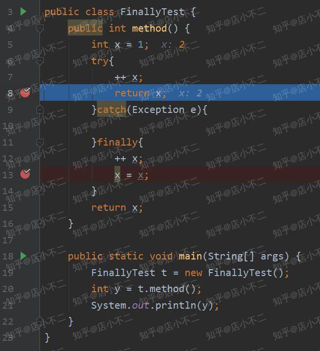
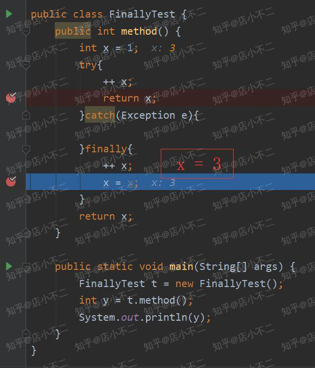

本篇文章我们主要探讨 一下如果try {}语句中有return，这种情况下finally语句还会执行吗？其实JVM规范是对这种情况有特殊规定的，那我就先上代码吧！
public class FinallyTest {
public int method() {
int x = 1;
try{
++ x;
return x;
}catch(Exception e){
}finally{
++ x;
}
return x;
}
public static void main(String[] args) {
FinallyTest t = new FinallyTest();
int y = t.method();
System.out.println(y);
}
}对于上述代码，我们有以下几个问题，来自测一下吧：
如果在 try 语句块里使用 return 语句，那么 finally 语句块还会执行吗？
如果执行，那么是怎样实现既执行 return 又执行 finally 的呢？
上面的程序输出是什么？为什么？
对于该问题，答案是肯定的。Java官方文档上是这么描述的:
The
finallyblock always executes when thetryblock exits.`
我们看到描述词用的是always，即在try执行完成之后，finally是一定会执行的。这种特性可以让程序员避免在try语句中使用了return, continue或者 break关键字而忽略了关闭相关资源的操作。把清理相关资源放到finally语句块中一直是最佳实践。
PS: 用到finally关闭资源的时候，给大家提个醒，应该尽量避免在finally语句块中出现运行时错误，可以适当添加判断语句以增加程序健壮性：
finally {
if (out != null) {
System.out.println("Closing PrintWriter");
out.close(); // 不要在finally语句中直接调用close()
} else {
System.out.println("PrintWriter not open");
}
}我们知道了finally语句会执行，当我们在IDE上运行该程序的时候，会发现运行结果是2。那么为什么不是3呢？
我们来debug一下：
我们在下图可以看到，try中x值是2，且执行了try语句块中的return x语句。

之后执行了finally语句，x重新赋值为3`。

try中返回了x=2, finally语句又重新设置了x=3，为什么返回给主程序的结果是2呢？
原来JVM规范里面明确说明了这种情况：
If the try clause executes a return, the compiled code does the following:
1. Saves the return value (if any) in a local variable.
2. Executes a jsr to the code for the finally clause.
3. Upon return from the finally clause, returns the value saved in the local variable.大意就是如果在try中return的情况下，先把try中将要return的值先存到一个本地变量中，即本例中的x=2将会被保存下来。接下来去执行finally语句，最后返回的是存在本地变量中的值，即返回x=2.
Notes:还有一点要注意的，如果你在finally里也用了return语句，比如return ++x。那么程序返回值会是3。因为规范规定了，当try和finally里都有return时，会忽略try的return，而使用finally的return。
今天主要介绍了当try语句中有return的时候，其与finally语句的执行情况。我们的得到的结论有：
本文由博客一文多发平台 OpenWrite 发布！
个人公众号：技术Go
您的点赞与支持是作者持续更新的最大动力！